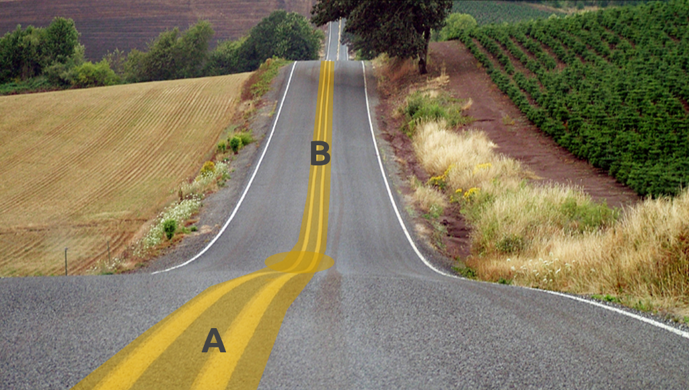
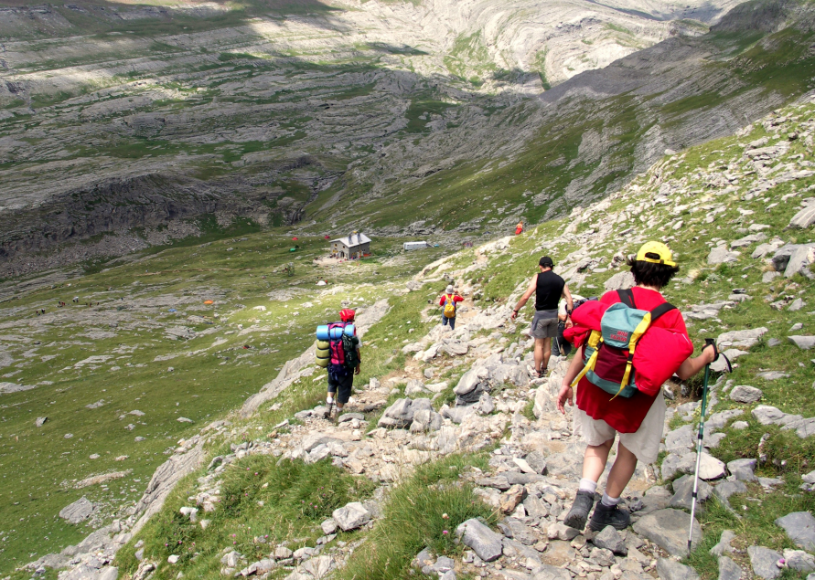

データベース内の
最短経路探索
とpgroutingなどについて
Presented by Vicky Vergara
"Al andar se hace camino
y al volver la vista atrás
se ve la senda que nunca
se ha de volver a pisar."
君が歩くとそこに道はできる
そして後ろを振り返ったとき
二度と辿ることはできない道が見えるだろう
Antonio Machado
Celia Virginia Vergara Castillo
- 経済学者, コンピュータ科学者
- Georepublic
- pgRouting 開発者
- メキシコ人
- Vickyとして知られています
FOSS4G をお楽しみください!!!

pgRouting プロジェクト
オープンソースプロジェクト


オープンソースプロジェクト

New Release
pgRouting 2.1
Precise definitions
For example ....
Weighted Undirected Graph
-
Let $V$ be a set of vertices
$V = source \cup target \cup \{start_v\} \cup \{end_v\}$ -
Let $E$ be a set of edges
- when $reverse\_cost = \varnothing$:
$E = \{ (source_i, target_i, cost_i) | cost_i \geq 0 \}$
$\cup \quad \{ (target_i, source_i, cost_i) | cost_i \geq 0 \}$ - when $reverse\_cost \neq \varnothing$:
$E = \{ (source_i, target_i, cost_i) | cost_i \geq0 \}$
$\cup \quad \{ (target_i, source_i, cost_i) | cost_i \geq 0 \}$
$\cup \quad \{ (target_i, source_i, reverse\_cost_i) | reverse\_cost_i \geq 0)\}$
$\cup \quad \{ (source_i, target_i, reverse\_cost_i) | reverse\_cost_i \geq 0)\}$
- when $reverse\_cost = \varnothing$:
- $G_u(V,E)$ is a weighted undirected graph
Many algorithms
For example ....
algorithms
- Shortest Path Algorithm
- Dijkstra
- A-Star
- Alternative Routes
- Turn Restrictions
- Traveling Salesperson Algorithm
- Drivetime Analysis
- Vehicle Route Problem Solver


ライブラリは
データベース内での
ルート検索機能を
提供しています
Prepare for Routing
- Create a Database
- Load data
Create a Database
CREATE DATABASE routing;
\c routing
CREATE EXTENSION postgis;
CREATE EXTENSION pgrouting;
Load data
BBOX="-122.8,45.4,-122.5,45.6"
wget --progress=dot:mega
\-O "sampledata.osm"
\ "http://www.overpass-api.de
\ /api/xapi?
\*[bbox=${BBOX}][@meta]"
osm2pgrouting -d routing
\ -f sampledata.osm
Let's Route!!!
From one starting point
to one Destination
SQL Query
SELECT * FROM pgr_dijkstra('
SELECT gid as id,
source,
target,
cost_s as cost,
reverse_cost_s AS reverse_cost
FROM ways',
61796, 73402, true);
Query Result
.seq | path_seq | node | edge | cost | agg_cost
-----+----------+-------+--------+--------+---------
1 | 1 | 61796 | 27230 | 1.7314 | 0
2 | 2 | 40331 | 27259 | 4.4036 | 1.7314
3 | 3 | 42625 | 27258 | 2.0006 | 6.1350
...
7 | 9 | 73402 | -1 | 0 | 19.0029
We are not alone
Use other open source tools for rendering
From House
to Restaurant
SQL Query
SELECT * FROM pgr_dijkstra('
SELECT gid as id,
source, target,
cost_s as cost,
reverse_cost_s AS reverse_cost
FROM ways',
73402, 61796);
From Restaurant
to House
From many starting points
to one destination
SQL Query
SELECT * FROM pgr_dijkstra('
SELECT gid as id,
source, target,
cost_s as cost,
reverse_cost_s AS reverse_cost
FROM ways',
ARRAY[61796, 47568], 73402);
From many houses
to one Restaurant
From one starting point
to many destinations
SQL Query
SELECT * FROM pgr_dijkstra('
SELECT gid as id,
source, target,
cost_s as cost,
reverse_cost_s AS reverse_cost
FROM ways',
73402, ARRAY[ 61796, 47568], true);
From one restaurant
to many houses
From many starting points
to many destnations
SQL Query
SELECT * FROM pgr_dijkstra('
SELECT gid AS id,
source, target,
cost_s as cost,
reverse_cost_s AS reverse_cost
FROM ways',
ARRAY[61796, 47568], ARRAY[73402, 51647]);
From many houses
to many restaurants
In general
Query Result
| Column | Content |
|-----------|---------------------------------|
| seq | Sequencial number |
| path_seq | Sequencial number for each path |
| start_vid | Start vertex of the path |
| end_vid | End vertex of the path |
| node | Node identifier |
| edge | Edge identifier |
| cost | Cost of the edge |
| agg_cost | Cost of the path up to the node |


Costs
Routing bicycles
Internal SQL
SELECT gid AS id, source, target,
CASE
WHEN (source_altitude > target_altitude)
length / 2
ELSE
length * 4
END AS cost,
CASE
WHEN (source_altitude > target_altitude)
length * 4
ELSE
length / 2
END AS reverse_cost
FROM ways
Field work

Internal SQL
SELECT gid AS id, source, target,
CASE
WHEN (wet)
cost_s * wet_penalty
ELSE
cost_s
END AS cost,
CASE
WHEN (wet)
reverse_cost_s * wet_penalty
ELSE
reverse_cost_s
END AS reverse_cost
FROM ways
Routing cows
Internal SQL
SELECT gid AS id, source, target,
length AS cost
FROM ways WHERE road_type = 'rural'
...
directed = false
Routing Hickers
Internal SQL (part 1)
SELECT gid AS id, source, target,
CASE
WHEN (source_altitude > target_altitude)
length * calories
WHEN (source_altitude > target_altitude)
length * calories * 1.5
ELSE
length * calories * 3.5
END AS cost,
...
Internal SQL (part 2)
...
CASE
WHEN (source_altitude = target_altitude)
length * calories
WHEN (source_altitude > target_altitude)
length * calories * 3.5
ELSE
length * calories * 1.5
END AS reverse_cost
FROM ways
pgr_dijkstra
directed graph
With reverse cost
SELECT * FROM pgr_Dijkstra(
'SELECT id, source, target, cost, reverse_cost FROM edges',
3, 5,
true);
Without reverse cost
SELECT * FROM pgr_Dijkstra(
'SELECT id, source, target, cost FROM edges',
3, 5,
true);
pgr_dijkstra
on undirected graph
With reverse cost
SELECT * FROM pgr_Dijkstra(
'SELECT id, source, target, cost, reverse_cost FROM edges',
3, 5,
false);
Without reverse cost
SELECT * FROM pgr_Dijkstra(
'SELECT id, source, target, cost FROM edges',
3, 5,
false);
"Al andar se hace camino
y al volver la vista atrás
se ve la senda que nunca
se ha de volver a pisar."
君が歩くとそこに道はできる
そして後ろを振り返ったとき
二度と辿ることはできない道が見えるだろう
Antonio Machado
Interested in pgRouting?
- pgRouting: http://pgrouting.org
- pgRouting workshop: http://workshop.pgrouting.org/
- Website: http://georepublic.info
- Email: vicky@georepublic.de